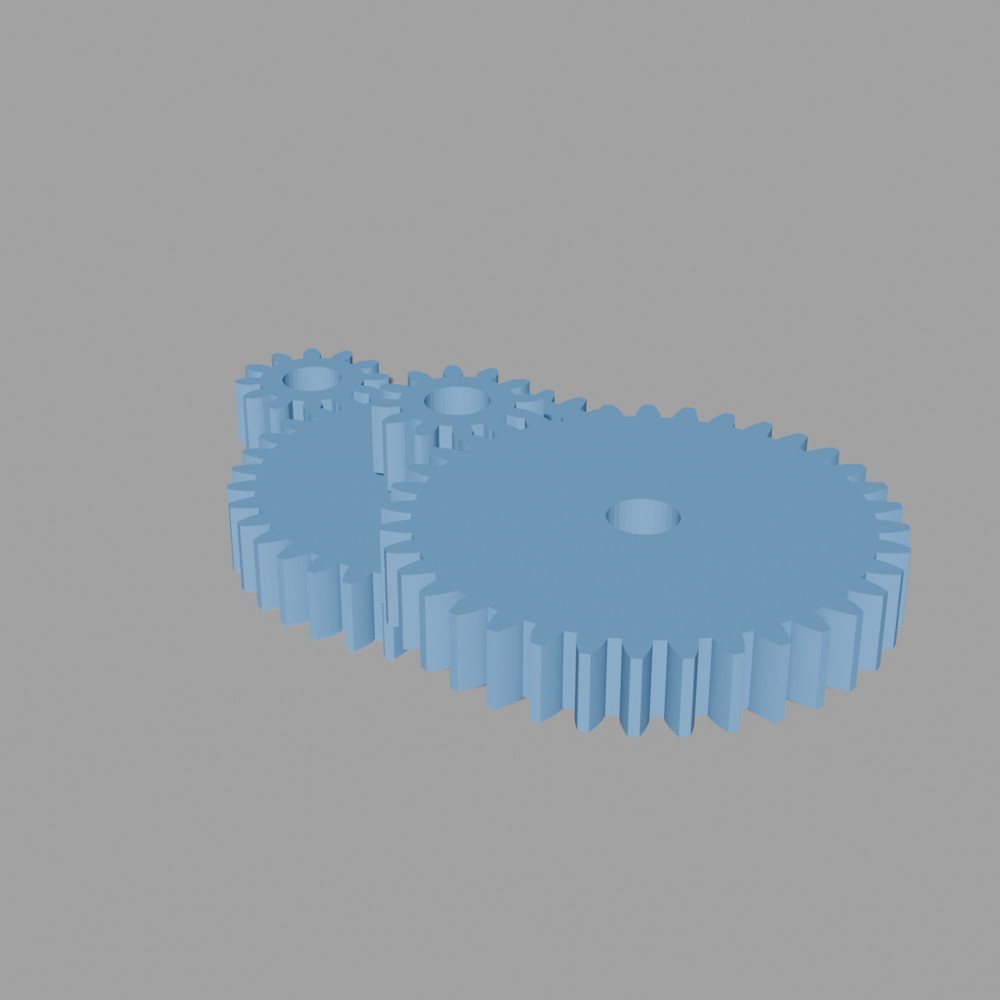
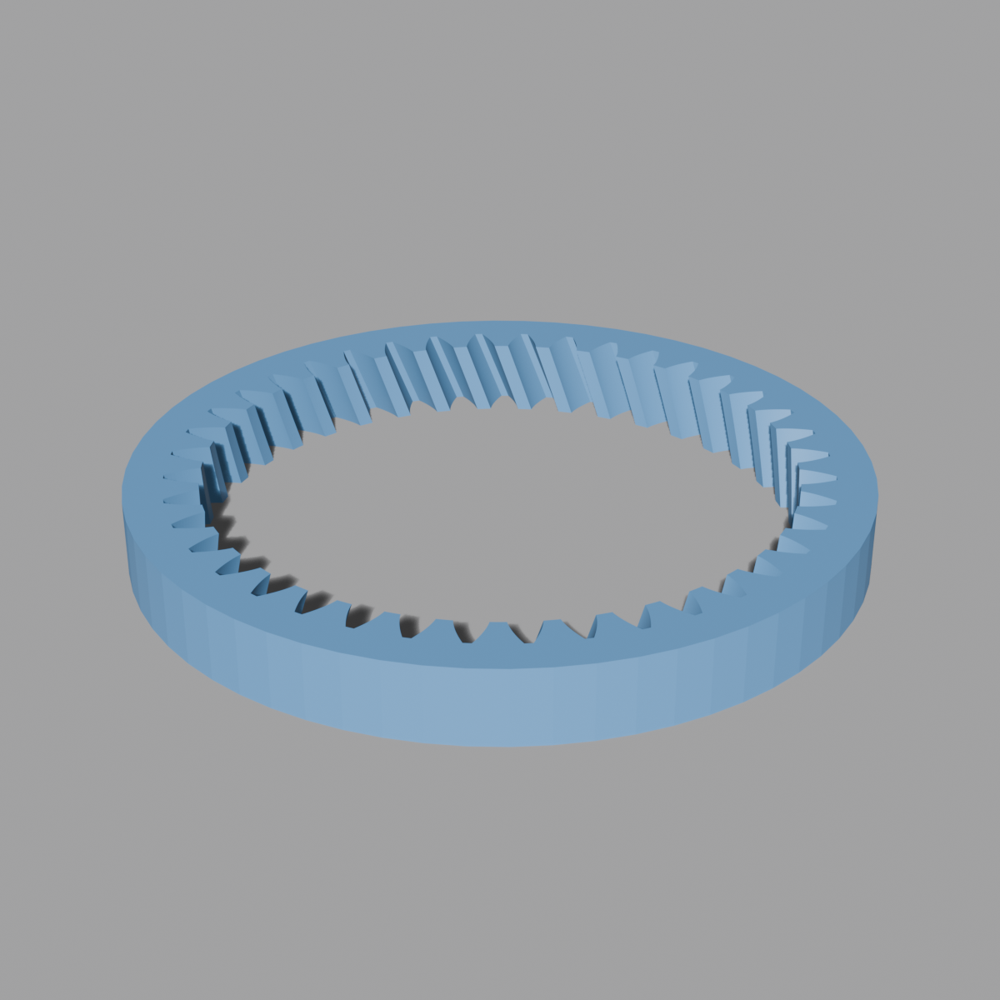
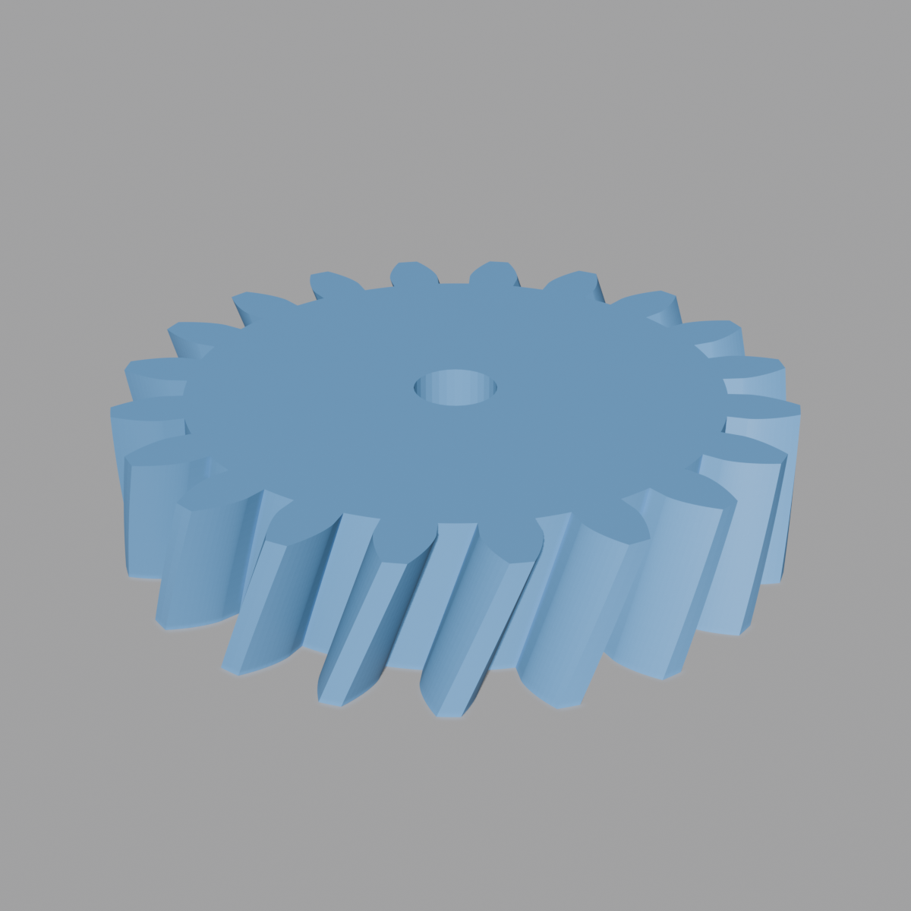
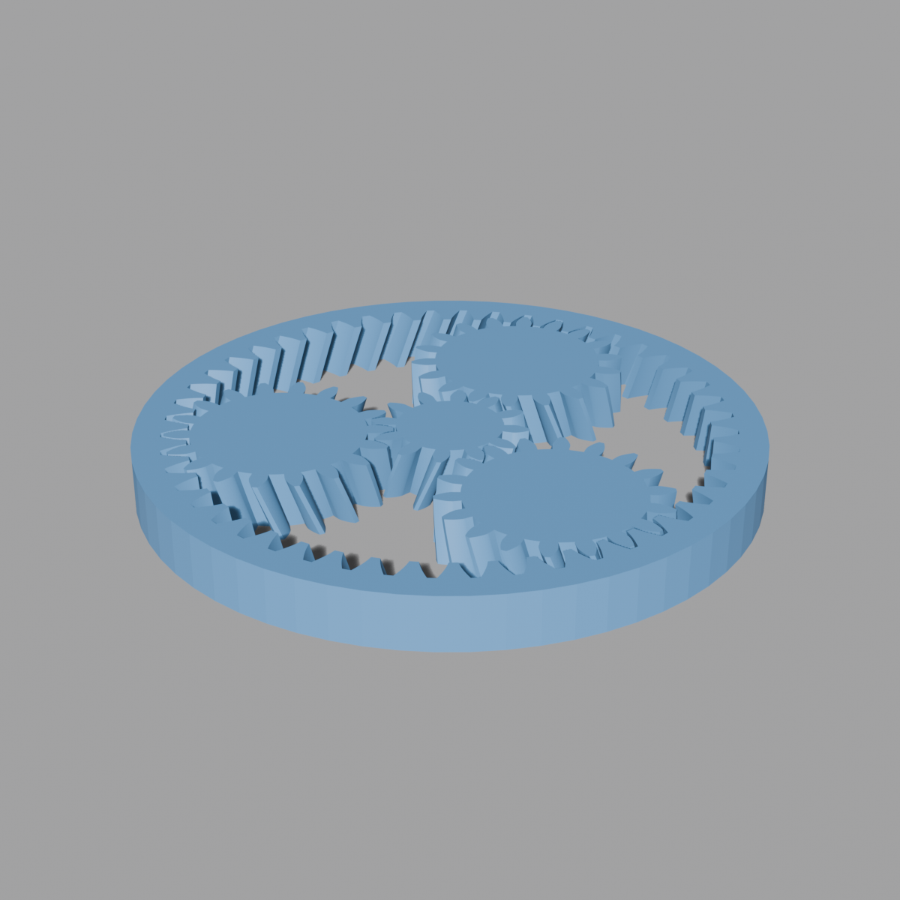
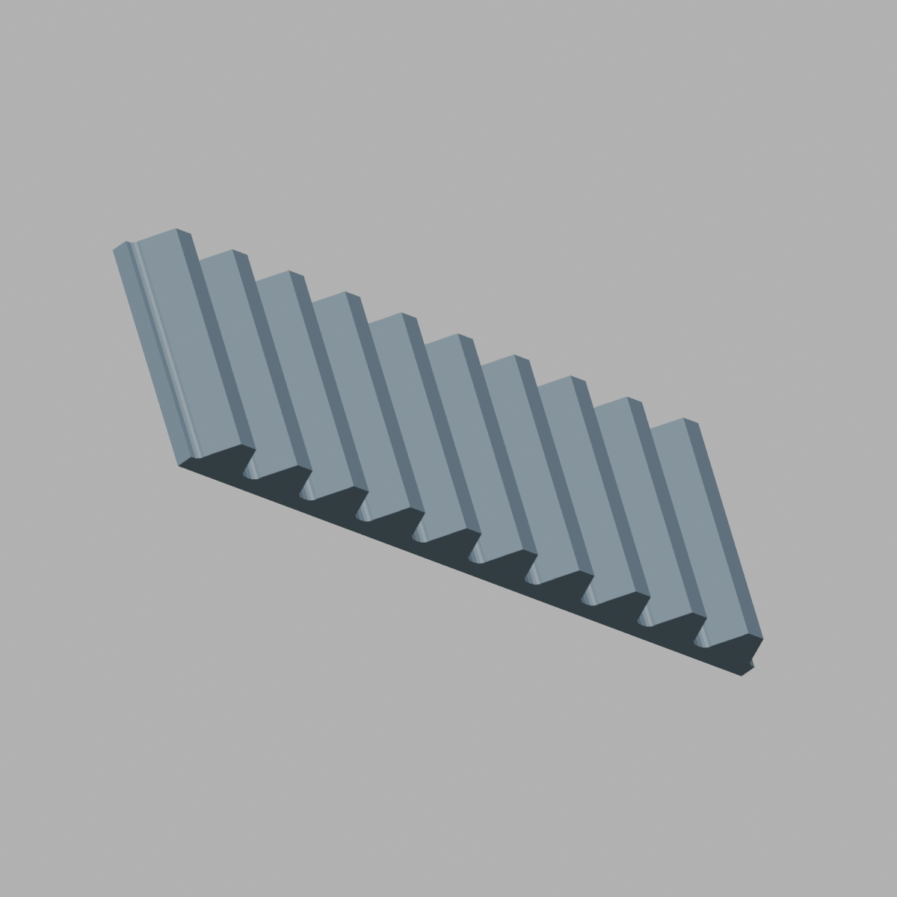
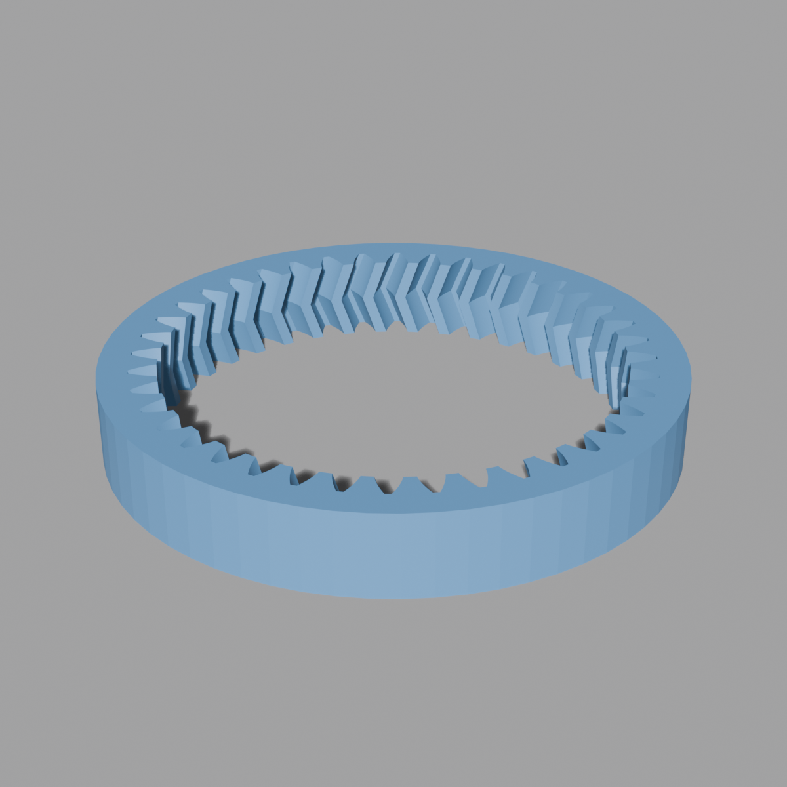
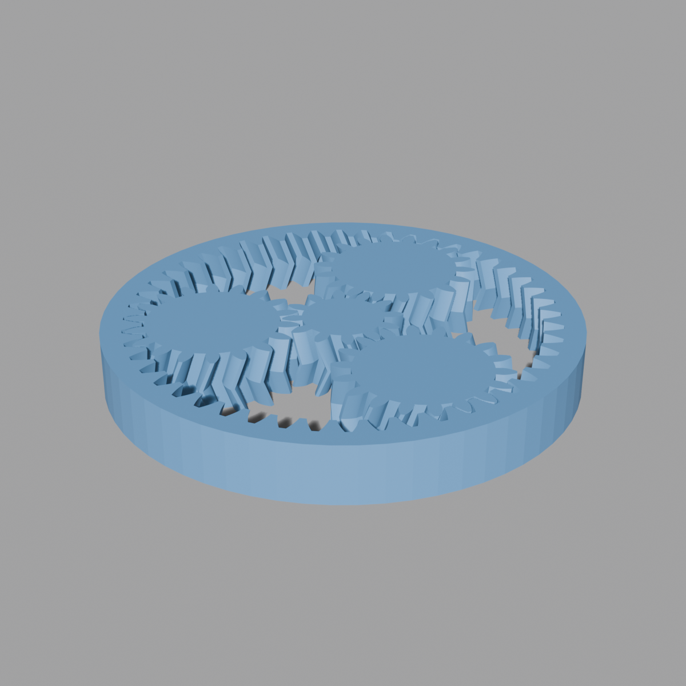
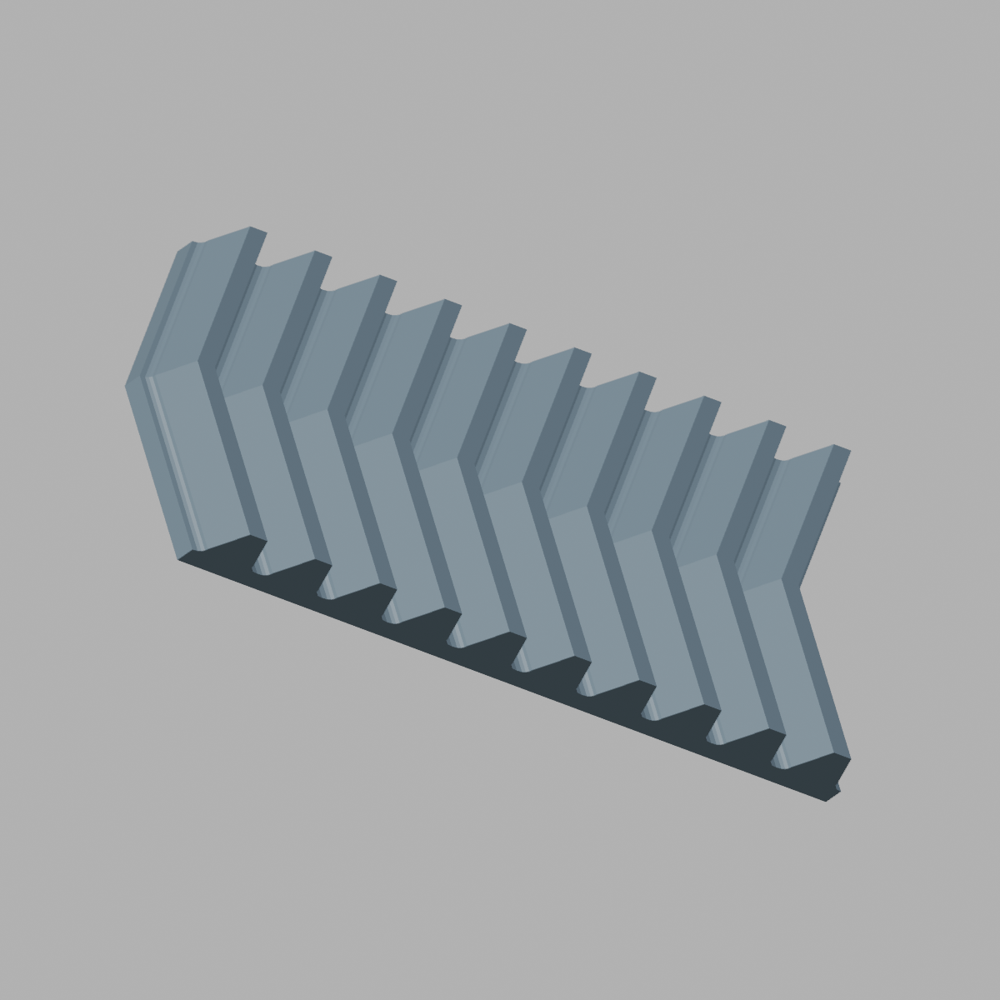
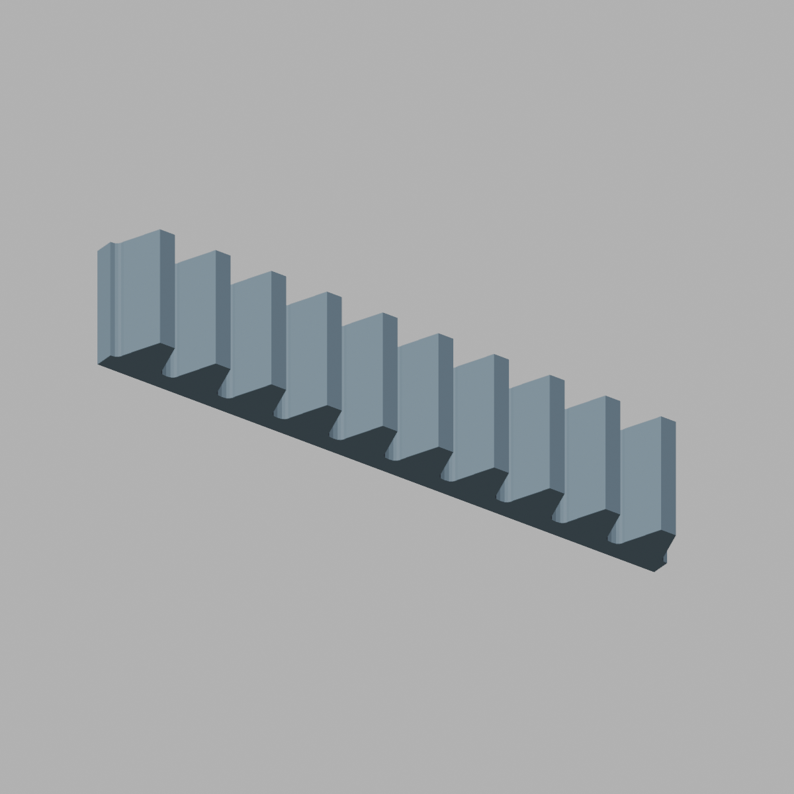

This document covers everything that's true for every gear generator in mechanisms_core/. Primitive-specific docs (one file per generator, in this same folder) only cover what's different about that primitive — they assume you've read this first.
All 15 gear primitives ship as separate operators, one Blender object (or, for gear sets, several) per call, appearing under Shift-A > Mechanisms > Gears.
Primitives in this family
mechanisms_core/gears/ splits into five subfamilies, matching the Mechanisms > Gears menu structure in menu.py: external/, ring/, planetary/, bevel/, rack/. gear_matching.py (the Match Target system, see below) lives at gears/ root since it's shared by every subfamily.
| Primitive | File | kind stamp |
|---|---|---|
| Spur gear | gears/external/spur_gear.py | spur |
| Helical gear | gears/external/helical_gear.py | helical |
| Herringbone gear | gears/external/herringbone_gear.py | herringbone |
| Bevel gear | gears/bevel/bevel_gear.py | bevel |
| Annulus (ring) gear | gears/ring/annulus_gear.py | annulus |
| Helical annulus gear | gears/ring/helical_annulus_gear.py | helical_annulus |
| Herringbone annulus gear | gears/ring/herringbone_annulus_gear.py | herringbone_annulus |
| Straight rack | gears/rack/straight_rack.py | rack |
| Helical rack | gears/rack/helical_rack.py | helical_rack |
| Herringbone rack | gears/rack/herringbone_rack.py | herringbone_rack |
| Planetary gear set | gears/planetary/planetary_gear_set.py | (none — see below) |
| Helical planetary gear set | gears/planetary/helical_planetary_gear_set.py | (none) |
| Herringbone planetary gear set | gears/planetary/herringbone_planetary_gear_set.py | (none) |
| Cluster gear | gears/external/cluster_gear.py | (none) |
| Compound gear train | gears/external/compound_gear.py | (none) |
The single-gear, ring-gear, and rack primitives (top 10 rows) are building blocks meant to mesh with each other and participate in the Match Target system below. The gear-set primitives (bottom 5 rows) are self-contained assemblies — they build several already-meshed gears in one call and don't stamp or read bmech_* properties themselves.
Units and core parameters
Everything is millimeters. Every single-gear primitive shares two core parameters:
module(mm) — sets tooth size. Two gears only mesh if their modules match. For helical/herringbone gears,moduleis the transverse module (measured in the cross-section view); the normal module (what a real hob/cutter would be specified as) ismodule * cos(helix_angle)and is shown as a read-only info line in the operator panel.pressure_angle_deg— standard range 10–45°, default 20°. Must match between meshing gears. Larger pressure angles give stronger, wider-based teeth but need more radial clearance.
Tooth proportions are standard throughout the family:
ADDENDUM_COEFF = 1.0 # tooth height above pitch circle, in units of module
DEDENDUM_COEFF = 1.25 # tooth depth below pitch circle, in units of moduleso for an external gear, addendum_radius = pitch_radius + module and dedendum_radius = pitch_radius - 1.25*module, where pitch_radius = module * tooth_count / 2.
Annulus (internal/ring) gears swap these roles. The cutter that carves inward-pointing teeth into a ring is built with the same profile-builder code as an external tooth, but ADDENDUM_COEFF and DEDENDUM_COEFF swap which one is "outward" and which is "inward" — so for a ring gear, tip_r = pitch_r - module (teeth point inward) and root_r_inner = pitch_r + 1.25*module (tooth base meets the solid ring body). See annulus_gear.md for the full derivation.
Hand convention — the one rule most likely to bite you
Helical and herringbone gears (and racks) have a hand property (RIGHT/LEFT). The rule for which hand a mating part needs is not simply "external-external vs. external-internal" — it depends on the relative angular position of the two contact points, which happens to coincide with that split for gear-gear and gear-annulus pairs but not for gear-rack pairs:
- Two external gears on parallel shafts (helical↔helical or herringbone↔herringbone, spur excluded since it has no hand): mating gears need OPPOSITE hands. This is
gear_matching.sync_helical_opposite. Geometrically: gear B's contact point (facing gear A) sits at gear B's own θ=180° position relative to gear A's own θ=0° contact point — that 180° relative offset is what flips the sign in the tooth-flank-slope derivation. - External pinion inside a helical/herringbone annulus (ring) gear: mating parts need the SAME hand. This is
gear_matching.sync_helical_same. - Helical/herringbone rack meshing a helical/herringbone pinion: mating parts need the SAME hand —
gear_matching.sync_helical_same, notsync_helical_oppositedespite the rack being "external" tooth geometry like the first case above. A rack sits directly below its pinion, contacting at the pinion's own θ=-90° point — a 90°, not 180°, relative offset from a reference θ=0° — and that different offset does not produce the same sign flip the side-by-side gear-gear case does. Confirmed empirically (not just by rederiving the angle math): building a 30°-helix pinion with a same-hand rack produces 0 mm³ of mesh interpenetration; the opposite-hand combination produces hundreds of mm³ of gross overlap across the width. An earlier version of this library got this wrong by assuming "external tooth on the outside" was the deciding factor and applying the gear-gear rule to racks by analogy — it isn't; the deciding factor is the relative contact angle. See helical_rack.md for the full derivation.
Herringbone parts specifically have no net axial thrust regardless of hand (that's the point of the herringbone V-shape) — but hand still has to match per the rules above, because it determines which way the V opens, not just which way it twists.
Straight (non-helical) gears and racks — spur, straight rack, bevel, straight annulus — have no hand property at all.
The Match Target system (gear_matching.py)
Every gear operator that finishes successfully stamps custom properties (bmech_kind, bmech_module, bmech_pressure_angle_deg, and where applicable bmech_tooth_count, bmech_helix_angle_deg, bmech_hand) onto the object it creates, via gear_matching.stamp_gear(...).
Every gear operator also exposes a Match Target object picker, drawn via layout.prop(context.window_manager, "bmech_gear_target", ...). This lives on WindowManager, not as a PointerProperty on the operator itself — bpy.types.Operator can't hold a PointerProperty to an Object (Blender silently drops that property and everything declared after it in the class on registration), which is exactly the mistake this system exists to avoid repeating. Each operator instead implements bmech_sync_target(self, context), and a shared update callback on the WindowManager property (gear_matching._on_target_change) dispatches to whichever operator context.active_operator currently points at. See CONVENTIONS.md#the-match-target-pattern--letting-one-parts-output-drive-anothers-properties for the full list of Blender-API gotchas this pattern runs into — that section is written to generalize to any future family that wants the same kind of cross-object matching, not just gears.
The poll function (gear_matching.gear_target_poll) accepts any mesh object carrying a bmech_module property — it does not check bmech_kind, so nothing stops you from picking a bevel gear as the target for a rack. This is deliberate, not an oversight: cross-kind matches are sometimes mechanically real (a helical gear meshing with one half of a herringbone gear, both sharing module/pressure-angle/helix/hand) and sometimes represent a shared-hub relationship rather than a direct mesh (see the spur-gear case below) — the system only saves you from retyping numbers, meshing correctness is on you either way.
*Known footgun: targeting a ring (annulus) gear when building a rack that actually meshes with the pinion inside that ring. Say a pinion meshes with both an annulus gear and a rack — you might reach for the annulus as the rack's target since "it has the same numbers anyway." module/pressure_angle_deg/helix_angle_deg/hand genuinely do come out identical either way, by transitivity (sync_helical_same is used for both the pinion↔ring pair and the rack↔pinion pair, so ring-hand = pinion-hand = rack-hand). But two other things silently use whichever* target you picked, not "the pinion specifically":
- Position — the rack always drops itself
target's own pitch radius belowtarget.location. Point it at the ring (pitch radius sized for the ring's own, usually much larger, tooth count) and the rack lands nowhere near the actual pinion. MATCH_GEARlength mode — sizes the rack to spantarget's own tooth count. Point it at the ring and the rack comes out sized for the ring's tooth count, not the pinion's.
Target the pinion directly when building a rack. Only target the ring gear itself when building something that meshes with the ring (another pinion, or a matching gear set).
Picking a target runs one of four sync helpers, chosen by what kind of pair the operator represents:
| Helper | Copies | Used by |
|---|---|---|
sync_module_pa | module, pressure angle | spur, straight rack, straight annulus |
sync_helical_opposite | + helix angle, inverted hand | helical/herringbone external gears |
sync_helical_same | + helix angle, same hand | helical/herringbone annulus gears, helical/herringbone racks |
sync_bevel | module, pressure angle, target's tooth count → this gear's mate_teeth | bevel gears |
Racks additionally phase-align in X against a target, via gear_matching.rack_phase_align_x(target, tooth_count_rack), on top of the existing Y-drop-by-pitch-radius and X-centering. This is purely cosmetic, not a correctness fix — standard involute teeth are in conjugate contact at every point along the path of contact, so every rotational phase of a correctly-dimensioned pair is interference-free. Without it, whether the rack spawns with a gear tooth centered in a rack gap (nice-looking) or a gear tooth landing dead-center on a rack tooth (confusing-looking, though not actually wrong) is arbitrary, driven by the interaction between the target's tooth count and tooth_count_rack's own parity — the existing X-centering formula already puts either a rack tooth-center or a rack gap-center at the target's local x=0 depending on whether tooth_count_rack is odd or even, so the phase fix has to know that parity too, not just the target's tooth count, to land on the right side of that distinction. See helical_rack.md for the full derivation, including a first version of this function that got the parity interaction wrong (verified by hand-checking a concrete example that it silently turned an already-correct alignment into an incorrect one for about half of all tooth_count_rack values).
A spur-gear target never drives helix angle or hand, even when the gear being created is helical or herringbone. stamp_gear never writes bmech_helix_angle_deg/bmech_hand for a "spur" kind, so sync_helical_opposite's if "bmech_helix_angle_deg" in target.keys() guards simply skip for a spur target — only module and pressure angle get pulled in. This isn't a gap to fix: a plain spur gear and a helical gear can't correctly mesh on a standard parallel-shaft arrangement regardless of matched module/pressure-angle (the tooth angles don't align), so matching a helical/herringbone gear to a spur target represents "shares a pitch circle" (e.g. a compound gear with a spur section on the same hub), not "these teeth mesh directly" — helix angle and hand are the twisted section's own properties to set, not something a non-twisted target could meaningfully specify. helical_gear.py/herringbone_gear.py's draw() reflects this directly: module/pressure_angle_deg are frozen whenever any target is set, but helix_angle_deg/hand are only frozen when the target actually has bmech_helix_angle_deg — i.e. when it's a helical/herringbone target, not a spur one.
*Even when a helical/herringbone target does drive helix_angle_deg, hand specifically stays editable if the two sides are different styles (one plain helical, one herringbone) — gear_matching. hand_target_ambiguous(self_is_herringbone, target). A herringbone tooth is two mirrored helical halves (bottom twists one way, top the other); a plain helical tooth is a single constant-angle line. A plain helical gear can only mesh correctly against one half of a herringbone gear at a time, and which hand is correct depends on which half — the sync can only assume one convention (matching the target's bottom half, per herringbone_gear.py's own hand property being defined relative to its bottom half) as a default, so it's wrong to lock the field when the design might actually engage the top half instead. This is NOT the same condition as the spur-target case above — helix_angle_deg's magnitude* stays frozen in the cross-style case (it's unambiguous regardless of which half is engaged), only hand reopens. Same-style pairs (helical↔ helical, herringbone↔herringbone) have no such ambiguity — a herringbone meshes a herringbone across its full width by design — and freeze hand normally, including across the external/annulus boundary (an external helical pinion matching a helical annulus target is still same-style, so hand stays frozen there too).
Gear-set primitives (planetary/cluster/compound) don't participate in this system at all — they build their own internally-consistent meshes in one shot and never call stamp_gear or read the target.
Bore holes and FDM compensation
Most single-gear primitives (not bevel, not gear-set shafts) expose bore_enable / bore_diameter / bore_compensation. Compensation is always added to the bore radius, never subtracted — printed holes come out undersized, and this project's convention is that all FDM dimensional compensation (external or internal) is additive, matching every other generator in this library. Default compensation is 0.2mm.
bore_r = bore_diameter / 2 + bore_compensationThe operator silently skips cutting the bore (not clamps it) if bore_r >= dedendum_radius — check the panel's error label rather than trusting the mesh will just come out with a smaller hole.
Bevel gears have no bore feature at all: their center-fan end-cap construction already fills the hub area, so there's nothing for a boolean cutter to remove without also removing tooth material. Don't expect a bore_diameter field on that operator.
Planetary/cluster/compound gear-set primitives use a related but distinct parameter, pip_gap — radial clearance added at tooth flanks so gears printed pre-meshed (print-in-place) don't fuse together. This is backlash clearance between teeth, not a bore-hole allowance; don't confuse the two.
Boolean/geometry implementation notes
These matter if you're reading or modifying the generator code, less so if you're just using the operators:
- Internal-tooth features are cut with a boolean DIFFERENCE modifier,
solver='EXACT', applied immediately and the cutter object deleted — never left as a live modifier — except all three annulus generators (annulus_gear.py,helical_annulus_gear.py,herringbone_annulus_gear.py), which were rewritten to skip the boolean entirely (see below). Planetary ring gears (herringbone_planetary_gear_set.py's own ring cutter, and its plain/ helical siblings) still use the boolean approach. - Cutter meshes (where a boolean cutter is still used) are extruded
BOOL_EPSILON = 0.001mmpast the body's end faces on both sides, specifically so the cutter's cap faces are never exactly coplanar with the body's cap faces (coplanar faces are a common cause of EXACT-solver boolean failures). - All three annulus generators were rewritten to skip the boolean entirely — direct bmesh construction (inner toothed wall, outer cylindrical wall, two caps), no cutter object, no
EXACTsolver call. Measured 10-180x faster across the three (295ms-5.8s boolean-based vs 3.7-208ms direct, for tooth counts 8-100) — the annulus family was the slowest in the whole gear family before this change. The two caps are the interesting part: they're built withbmesh.ops.triangle_fillfed the boundary edges of both the inner (toothed) loop and the outer (circular) loop together in one call, which triangulates the annular region between them directly (treating the inner loop as a hole), rather than hand-bridging the two loops with an index-matched strip of quads. A matched-angle bridge looks like the obvious approach (one outer point per inner-profile point, at the same angle) but doesn't work: the tooth profile inserts a dedendum-circle point at the same angle as its neighbor whereverbase_r > ded_r(a genuine straight undercut-flank segment, not a bug), and bridging to a same-angle outer point puts three points on the same ray through the origin — an unavoidably zero-area triangle regardless of how the resulting quad gets split. Confirmed by testing: a matched-angle outer ring reintroduces non-manifold edges and zero-area faces at low tooth counts (8/15/20); treating the outer ring as a fully independent, separately-spaced circle and lettingtriangle_fillreconcile the two loops does not. For the two twisted variants, the outer ring additionally stays PLAIN and UNTWISTED (only 2 Z-layers) — only the inner teeth twist. See annulus_gear.md for the full writeup and helical_annulus_gear.md / herringbone_annulus_gear.md for the twisted extensions. - All three annulus generators' pressure-angle clamps carry an extra
PA_TRIANGLE_FILL_MARGIN_DEG(0.2°) below the theoretical self-intersection limit, not the limit itself. Right at that limit the tooth tip's flank points become near-coincident — the old boolean-basedEXACTsolver tolerated a profile sitting exactly there, buttriangle_fill's constrained triangulation does not, and produced hundreds of non-manifold edges without the margin. - Where a boolean cutter is STILL used (planetary rings), concave/ star-shaped end caps on that cutter use
bmesh.ops.triangle_fillon its own single boundary loop, not a center-fan. This used to be reversed — center-fan from an added interior vertex, on the theory that triangle-fill could produce self-intersecting triangles on a concave polygon that the CGAL EXACT solver would then reject. That theory didn't hold up:triangle_fillwas tested directly against these exact profiles (tooth counts 8 through 100) and produced 0 self-intersections, while the center-fan approach had a real, confirmed defect the fan reasoning missed — the same collinear dedendum-circle point described above degenerates a fan triangle to exactly zero area. That looked harmless (a zero-area triangle covers no area) but wasn't: its short edge is shared with a side-wall face, so the mesh depends on that face existing to stay edge-manifold, even though it contributes nothing to visible volume. Dropping it outright (an intermediate fix, since discarded) turned the edge into a non-manifold boundary instead — confirmed to produce hundreds of non-manifold edges on some tooth counts. Bevel gears used to hit this too — confirmed 28 zero-area cap faces at the default tooth count — but since a bevel gear's end caps are single closed loops (no inner/outer pair to bridge, unlike an annulus), the fix there is simpler thantriangle_fill: cap each end with a single n-gon face (no center vertex at all), the same approachhelical_gear.py/herringbone_gear.pyalready use for their own end caps. No per-point triangles means this class of degenerate face can't occur. See bevel_gear.md for the fix writeup. Cluster-gear shoulders still use the center-fan approach, untouched — not confirmed to hit the same condition, and it has no boolean run against its own mesh either, so a degenerate cap face there would be cosmetic at worst, not a build failure, same reasoning that applied to bevel gears before their fix. - Helical/herringbone gear twist is built by slicing the extrusion into
n_slices(orn_slicesper half, for herringbone) Z-layers and rotating each slice byhand_sign * z * tan(helix_angle) / pitch_radius, wherehand_signis+1forRIGHTand-1forLEFT. This is the entire hand implementation — there's no separate mirroring step. - Helical/herringbone rack twist is the same idea taken to the gear-of-infinite-radius limit: instead of rotating each Z slice by an angle, the profile is sheared in X by
hand_sign * z * tan(helix_angle)(no division by pitch radius — the rack has none). A shear is affine (linear in Z), unlike a rotation, so a straight 3D edge between two Z-layers exactly reproduces every intermediate Z's sheared profile — no faceting approximation, non_slicesproperty needed.helical_rack.pybuilds exactly 2 layers (bottom, top);herringbone_rack.pybuilds exactly 3 (bottom, V-peak at width/2, top). See helical_rack.md for the derivation. unique_name("Gear")pre-computes a Blender-style.001/.002suffix before object creation, because the addon needs the final name up front for scene bookkeeping rather than relying on Blender's own on-creation renaming.
Validation conventions
- A hard geometric impossibility (dedendum/tip radius ≤ 0, bevel face width ≥ cone distance) is a CANCELLED operator with an ERROR-icon label in the panel; most of these cancel silently without an
self.report()call, so check the panel, not just the status bar. - A soft engineering guideline being violated (bevel
face_width_mm > cone_dist/3, planetary tooth-count/planet-count not dividing evenly) is a WARNING — the operator still runs and still reports viaself.report({'WARNING'}, ...), but the geometry is built anyway. Read the panel warnings; they're not blocking, but they're not decorative either.
Naming, units, and defaults at a glance
- Default
pressure_angle_degis 20.0° everywhere. - Default
moduleis 2.0mm for helical/herringbone/bevel/annulus families, 1.0mm for spur/rack/cluster/compound. - Minimum tooth count is 5 for most external gears, 8 for bevel gears (keeps cone-angle math and small-end teeth sane) and for annulus gears (
min=8ontooth_count). - Gear-set primitives (planetary/cluster/compound) create multiple objects per operator call — see each primitive's doc for the exact count and naming scheme.
Primitives

Annulus Gear
Straight-tooth internal gear — involute teeth cut into the bore of a solid ring, meshing with a spur pinion running inside it. See README.md for fa

Bevel Gear
Straight-tooth bevel gear — a toothed frustum for shafts meeting at 90°, built via Tredgold's approximation (each axial slice is the standard flat involute

Cluster Gear
Two involute spur gears of different sizes, stacked on one shared axle and printed as a single monolithic piece (smaller gear on top of the larger one). Common

Compound Gear
Builds a full multi-stage gear train — up to 4 stages, each a driver/driven pair on a shared intermediate shaft, auto-positioned so each stage's pitch circles a

Helical Annulus Gear
Helical internal gear — twisted involute teeth cut into the bore of a solid ring. See README.md for family-wide conventions and [annulus_gear.md](a

Helical Gear
External involute gear with twisted (helical) teeth for quieter, stronger meshing than a spur gear. See README.md for family-wide conventions, espe

Helical Planetary Gear Set
Same topology and assembly math as planetary_gear_set.md — read that first. This document only covers what's different: helical teeth o

Helical Rack
A straight rack whose teeth are sheared along X as a linear function of Z — the gear-of-infinite-radius limit of helical_gear.md's twist. Mes

Herringbone Annulus Gear
Herringbone internal gear — V-shaped involute teeth cut into the bore of a solid ring. See README.md for family-wide conventions and [annulus_gear.

Herringbone Gear
External involute gear with V-shaped (double-helical) teeth — two mirrored helical halves meeting at mid-width, canceling axial thrust so no thrust bearing is n

Herringbone Planetary Gear Set
Same topology and assembly math as planetary_gear_set.md, same hand-derivation rule as [helical_planetary_gear_set.md](helical_planetar

Herringbone Rack
A straight rack sheared into a V along X: the bottom half shears one way from Z=0 to Z=width/2, the top half shears back the other way from Z=width/2 to `

Planetary Gear Set
Builds a complete, correctly-meshed epicyclic gear set — sun, N planets, and ring — in one operator call. Straight (spur) teeth. See README.md for

Spur Gear
Straight-tooth external involute gear. The baseline gear primitive — every other external-gear generator in this library (helical, herringbone, bevel) is a vari

Straight Rack
Straight involute rack — the "gear of infinite radius" that converts a mating spur/helical pinion's rotation into linear motion. See README.md for